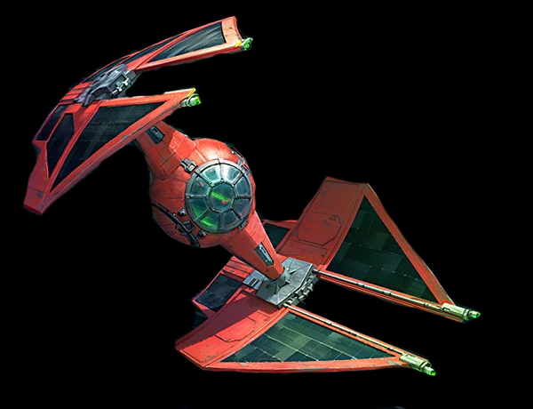

|
 TIE-Barion elfogóvadász91 000
|
TIE-Barion elfogóvadász történeteA TIE/ba Baron Space Superiority elfogóvadász, más néven TIE/ba interceptor, TIE Baron, TIE/in vagy TIE Interceptor a First Order által bevetett TIE interceptor egyik típusa volt. A TIE Baron egy harcra használt elfogóűrhajó volt, és gyakran keltett félelmet az Ellenállás pilótáiban, akik találkoztak vele. Egyetlen TIE Baron képes volt sikeresen megküzdeni egy egész vadászszázaddal. A TIE Baron-t a First Order az Új Köztársasággal és az Ellenállással vívott hidegháború során használta. Elrik Vonreg őrnagy 34 ABY-ban használta a TIE Baronját, amikor rajtaütött egy Kazuda Xiono által vezetett Új Köztársasági osztagon, amely az Ellenállással akart találkozni. Felszerelése
|